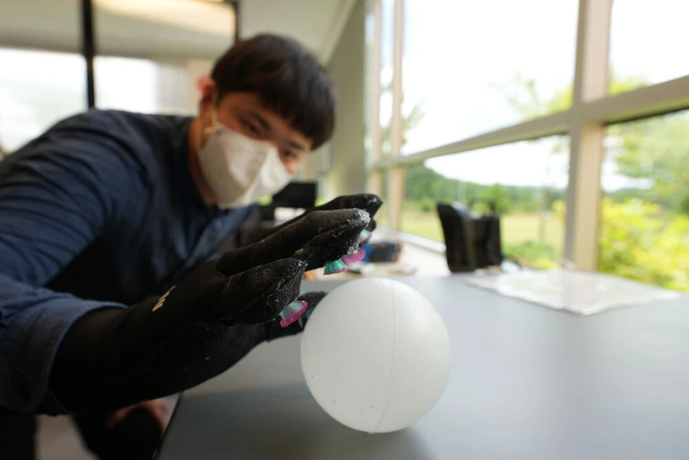
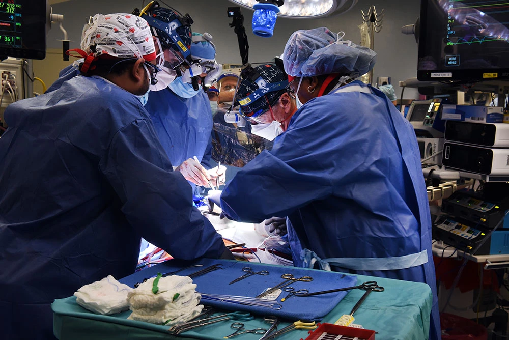
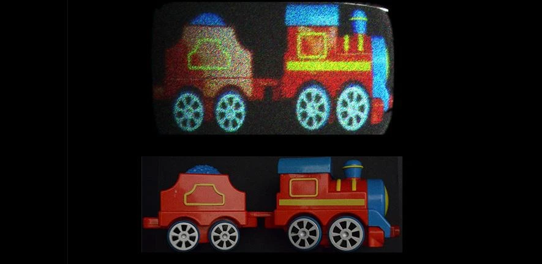
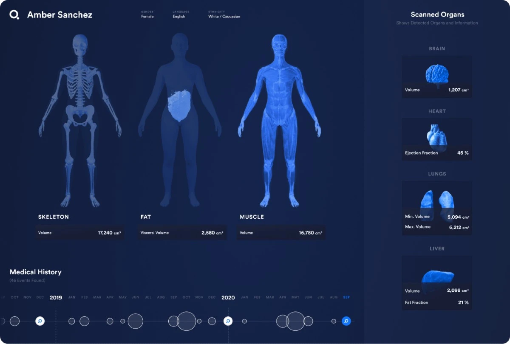
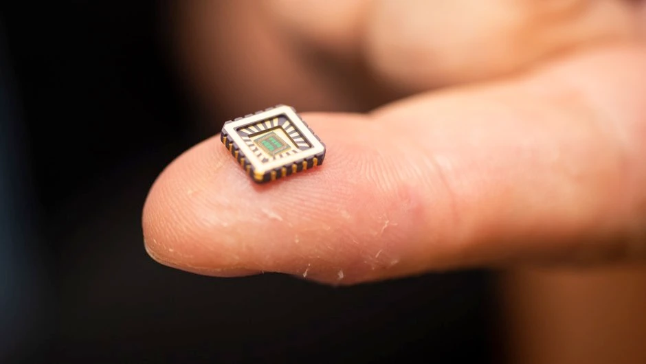
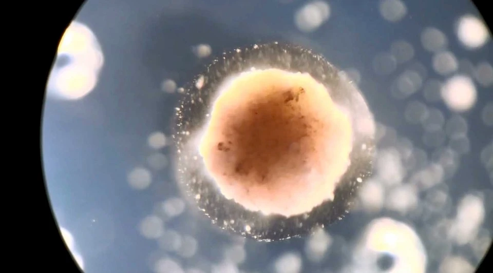

Sand batteries:
Not every technology bettering our future has to be complicated, some are simple, yet extremely effective.
One of these kind of technologies has come from some Finnish engineers who have found a way
These engineers piled 100 tons of sand into a 4 x 7 metre steel container.
All of this sand was then heated up using wind and solar energy.
This heat can then be distributed by a local energy company to provide warmth to buildings in nearby areas.
Energy can be stored this way for long periods of time.
Underwater glove

Plenty of technological developments have come from copying the attributes of animals,
and the 'octa gloves' are no exception.
The team behind these gloves re-imagined the way that an octopus's suckers work.
This design was created to perform the same function as said suckers
Through the use of these suckers and an array of micro-sensors, the suckers on the gloves are able to tighten
and loosen to grip objects underwater without applying a crushing force.
Xenotransplantation

Inserting the heart of a pig into a human feels like a bad idea, and yet, this is one
of the latest medical procedures that is seeing rapid progress
Xenotransplantation - the procedure of transplanting, implementing or infusing a human with cells,
tissues or organs from an animal source - has the potential to revolutionise surgery.
AI image-generation
As artificial intelligence continues to perform jobs just as well as humans,
there is a new industry to add to the list – the world of art.
Researchers at the company OpenAI have created a software that is able to create images from just worded prompts.
Type in ‘a dog wearing a cowboy hat singing in the rain’ and you’ll get a host of completely original images that fit that description
You can even choose what style of art your request will come back in. However, the technology isn't perfected and still has issues,
like when we gave it poor prompts on designing cartoon characters.
Brain reading robots
No longer a science fiction trope, the use of brain reading technology has improved hugely in recent years.
One of the most interesting and practical uses we’ve seen tested so far comes from researchers
Thanks to a machine-learning algorithm, a robot arm and a brain-computer interface,
these researchers have managed to create a means for tetraplegic patients
In tests, the robot arm would perform simple tasks like moving around an obstacle.
The algorithm would then interprets signals from the brain using an EEG cap and automatically determine when the arm had made a move
that the brain considered incorrect, for example moving too close to the obstacle or going too fast.
3D printed bones
3D printing is an industry promising everything from cheap house building through to affordable rugged armour,
but one of the most interesting uses of the technology is the building of 3D printed bones.
The company Ossiform specialises in medical 3D printing, creating patient-specific replacements
of different bones from tricalcium phosphate – a material with similar properties to human bones.
Using these 3D printed bones is surprisingly easy. A hospital can perform an MRI which is then sent to Ossiform
who create a 3D model of the patient-specific implant that is needed. The surgeon accepts the design and then once it is printed,
it can be used in surgery.
Realistic holographs

Holograms have been filling science fiction books, films and culture for years now,and while it does exist,
it remains a difficult thing to achieve, especially on a large scale.
However, a potential technology that could change this is holobricks.
Developed by researchers from the University of Cambridge and Disney Research,
holobricks are a way of tiling together multiple holograms to produce a large, seamless 3D image.
Digital "twins" that track your health

In Star Trek, where many of our ideas of future technology germinated,
human beings can walk into the medbay and have their entire body digitally scanned for signs of illness and injury.
Doing that in real life would, say the makers of Q Bio, improve health outcomes and alleviate the load on doctors at the same time
The US company has built a scanner that will measure hundreds of biomarkers in around an hour,
from hormone levels to the fat building up in your liver to the markers of inflammation or any number of cancers.
It intends to use this data to produce a 3D digital avatar of a patient's body – known as a digital twin –
that can be tracked over time and updated with each new scan.
Artificial neurons on silicon chips

Scientists have found a way to attach artificial neurons onto silicon chips,
mimicking the neurons in our nervous system and copying their electrical properties.
Until now neurons have been like black boxes, but we have managed to open the black box and peer inside,
said Professor Alain Nogaret, from the University of Bath, who led the project.
Our work is paradigm-changing because it provides a robust method to reproduce the electrical properties.
But it’s wider than that, because our neurons only need 140 nanowatts of power.
That’s a billionth the power requirement of a microprocessor, which other attempts to make synthetic neurons have used.
Internet for everyone

We can’t seem to live without the internet (how else would you read sciencefocus.com?),
but still only around half the world’s population is connected. There are many reasons for this, including economic
and social reasons, but for some the internet just isn’t accessible because they have no connection
Google is slowly trying to solve the problem using helium balloons to beam the internet to inaccessible areas,
while Facebook has abandoned plans to do the same using drones, which means companies like Hiber are stealing a march.
They have taken a different approach by launching their own network of shoebox-sized microsatellites into low Earth orbit,
which wake up a modem plugged into your computer or device when it flies over and delivers your data.
Living robots

Tiny hybrid robots made using stem cells from frog embryos could one day be used to swim around human bodies
to specific areas requiring medicine, or to gather microplastic in the oceans.
These are novel living machines,” said Joshua Bongard, a computer scientist and robotics expert at the University of Vermont,
who co-developed the millimetre-wide bots, known as xenobots.
They’re neither a traditional robot nor a known species of animal.
It’s a new class of artefact: a living, programmable organism."
futureTechnology
Artificial.page1